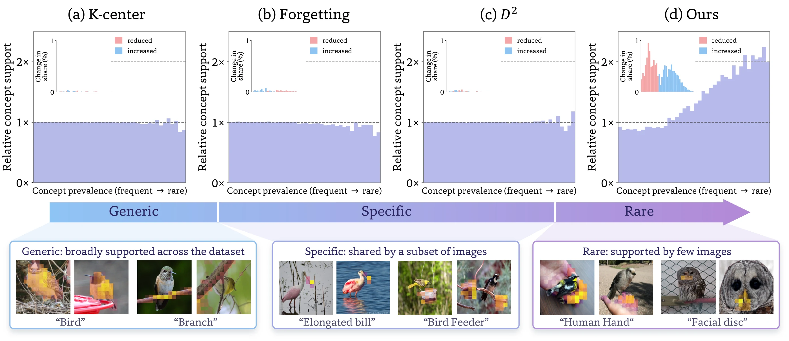
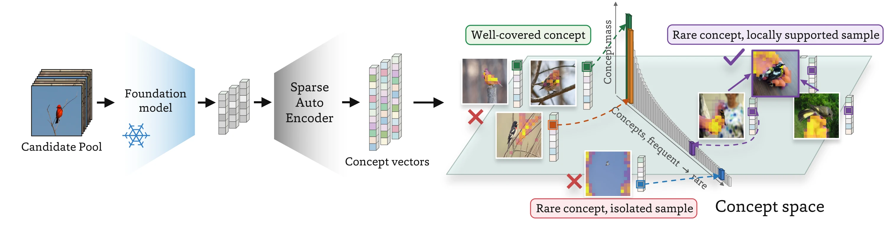
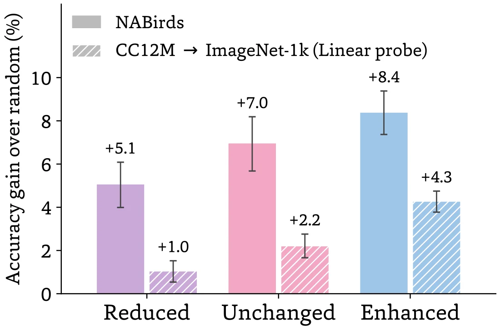
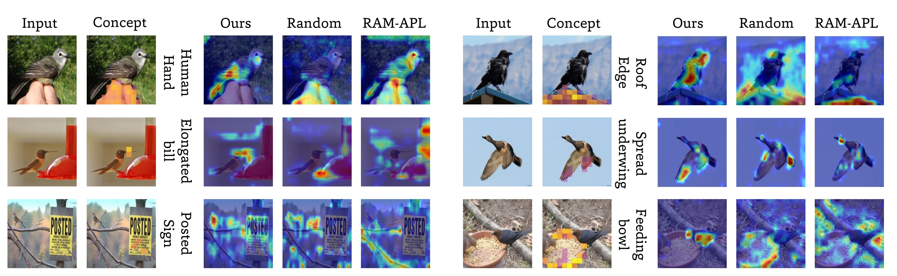
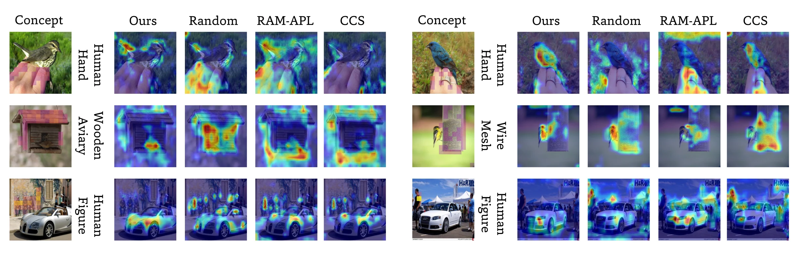
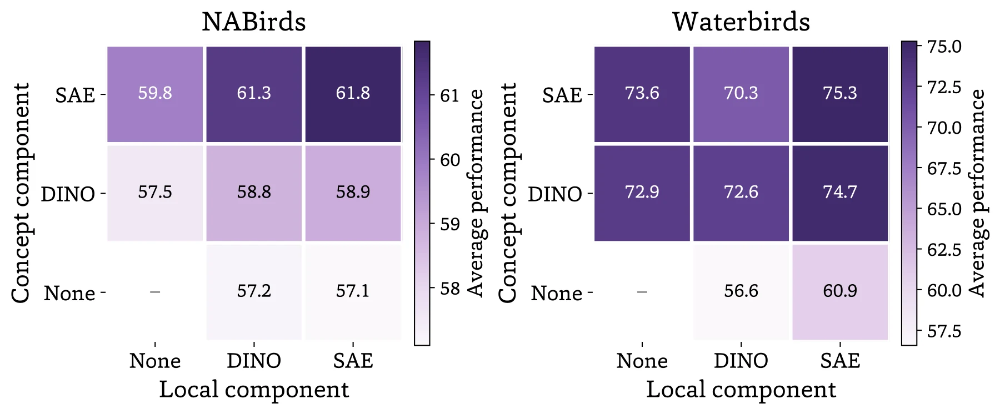
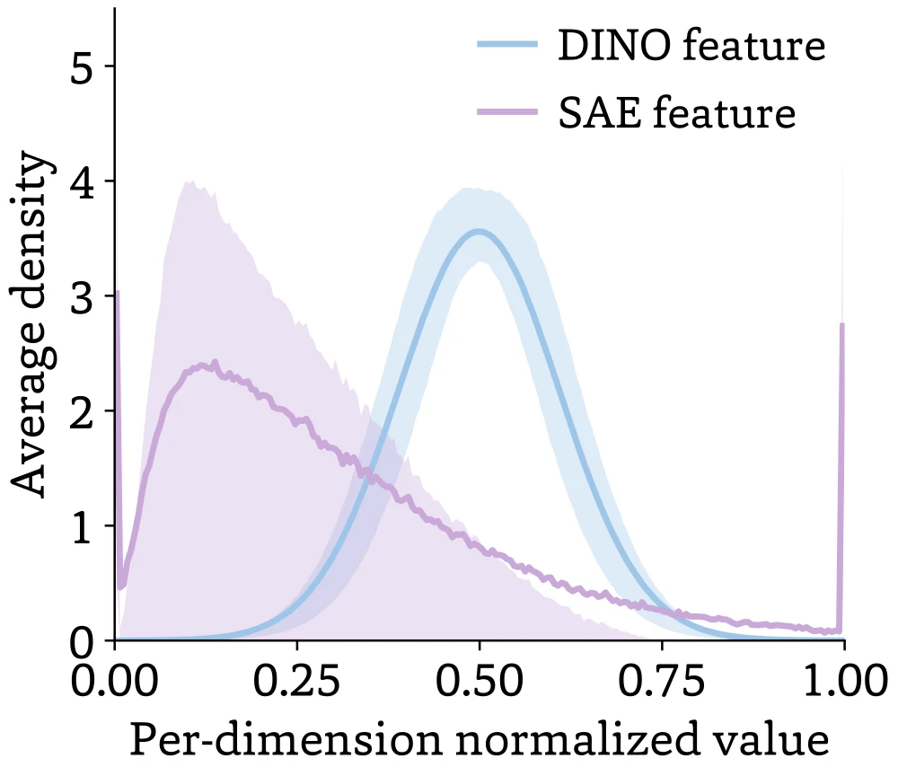
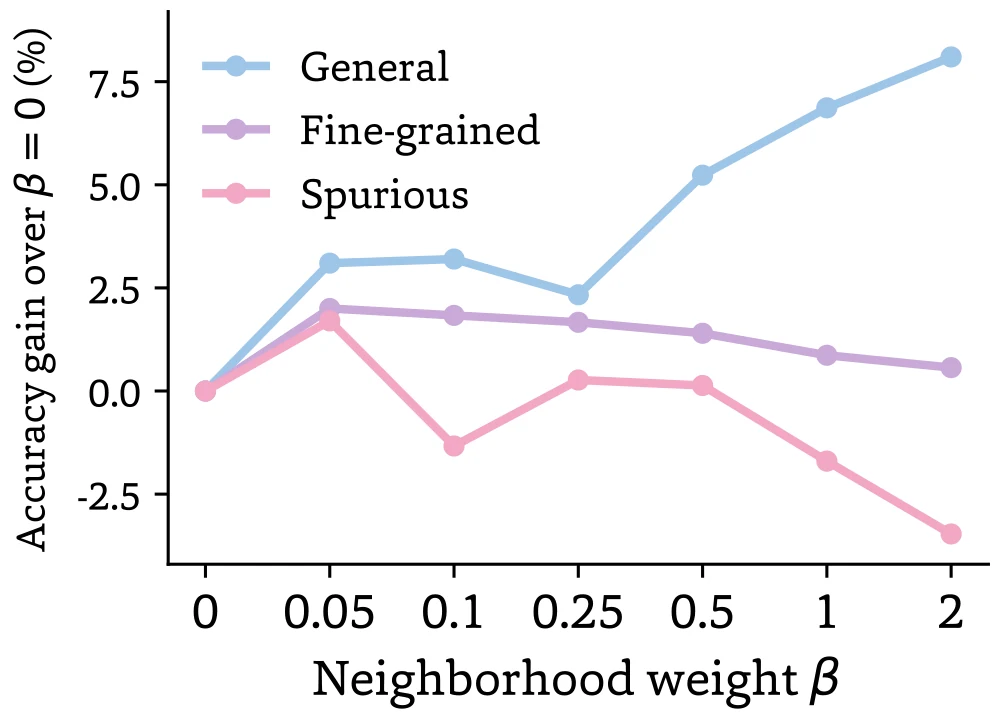

A training subset determines how much support each visual concept gets, from objects and attributes to textures and backgrounds. Tail concepts appear in only a few images and are easy to lose when data is reduced, which can hurt test-time robustness. We use sparse-autoencoder concepts to make this allocation explicit and shift more support toward the tail.
- Method We accumulate each concept's support as images are selected. Diminishing returns lower the value of concepts that are already well covered, and local support favors samples that, together with their neighbors, contribute to under-supported concepts, so recurring underrepresented concepts are preferred over isolated occurrences.
- Finding Test images with concepts that gained support improve the most. Broader coverage of the tail, including context unrelated to the class, also improves robustness to out-of-distribution and spurious contexts.
- Results Improvements over strong data selection baselines on fine-grained, spurious-correlation, and general image classification, and on CLIP pretraining with CC12M, with the largest margins at small budgets.

From Concept Value to Sample Value
We measure concept coverage to find what evidence the subset still needs, and local support to decide which samples fill that gap.

Describe each image by its sparse concepts
An SAE with \(C\) dimensions on DINOv3 patch features, max-pooled per image, gives a sparse concept vector \(\mathbf{x}_i\), where \(\mathbf{x}_i[c]\) is the activation of concept \(c\).
SAE concepts follow a long-tailed distribution. Fine-grained attributes, uncommon objects, and context variations appear in only a few images, which makes them easy to lose when data is reduced.
Dimensions tend to fire on recurring visual patterns, such as a bill shape, a feeder, a hand, or a sky background.
Concept coverage: where is support missing?
As images are added, we accumulate each concept's support and apply diminishing returns. Well-covered concepts become worth less, so under-supported ones become more competitive. The objective needs no explicit definition of the tail or a target frequency.
The concave \(\log(1+\cdot)\) saturates head concepts and leaves room for the tail.
Local support: which samples fill the gap?
Rare concepts do not automatically dominate selection, because the samples that carry them may receive limited local support when isolated. Each candidate also receives complementary credit for concepts recurring among nearby samples, so recurring underrepresented concepts are favored over isolated occurrences.
\(\mathcal{N}_k(t)\): the \(k\) nearest neighbors of \(I_t\) in SAE space; \(a_{ti}\): cosine similarity normalized over the neighbors; \(\beta\): strength of local support.
Which Concepts Does a Subset Support?
Do different selectors change the concept distribution, and do the concepts that gain support matter downstream?
FindingDifferent criteria, similar concept profiles
We profile each NABirds subset by how many concepts it covers, how evenly it spreads activation mass, and how common its concepts are relative to the full dataset.
K-Center, Forgetting, and D2-Pruning end up close to random sampling on all three measures, while our subset moves noticeably more support to tail concepts.
| Method | Unique coverage | Effective number | Prevalence ratio |
|---|---|---|---|
| Random | 7,973 | 865 | 1.00 |
| K-Center | 8,215 | 893 | 0.97 |
| Forgetting | 8,120 | 888 | 0.97 |
| D2-Pruning | 8,099 | 887 | 0.97 |
| Ours | 8,951 | 1,124 | 0.74 |
NABirds subsets. A prevalence ratio below 1 means more support for tail concepts.

FindingEnhanced concepts improve the most
We group concepts by how their training support changed relative to random selection, then test on images where each concept is strongly active.
All three groups improve over random selection. Images with enhanced concepts improve the most, both on NABirds and on ImageNet-1K after CLIP pretraining.
When the Tail Is Context: The “Human Hand” Concept
Some enhanced concepts are discriminative features, such as bills and wings. Others, such as hands, signs, and feeders, are not directly related to the species, and accuracy on test images with these concepts also improves.

More Finer-CAM examples NABirds & Stanford Cars

Broader Coverage and Background Shortcuts
In Waterbirds, bird type is spuriously correlated with the background. Our subsets contain more images that break this correlation.
FindingMore bias-conflicting images, without group labels
Bias-conflicting images, such as waterbirds on land, make up 18.8% of our subset, compared with under 10% for the other selectors we compare. Our method does not use group labels.
FindingGroup composition explains part of the gain
Random subsets with the same label-background counts close only part of the gap to our subset, and filling the same quotas with difficult images does worse. This suggests the improvement comes from both a more favorable group composition and richer visual evidence within each group.
| Method | Counter-corr. | WGA ↑ | All-bg ↑ |
|---|---|---|---|
| Random | 4.0 | 52.3 | 57.6 |
| Forgetting | 5.0 | 31.6 | 32.4 |
| K-Center | 5.4 | 57.5 | 72.6 |
| Moderate | 9.3 | 60.5 | 78.3 |
| Ours | 18.8 | 68.6 | 86.5 |
| Group-matched controls (same label-background counts as ours) | |||
| Random | 18.8 | 63.7 | 84.2 |
| Difficult | 18.8 | 52.2 | 73.7 |
| Easy | 18.8 | 64.0 | 85.8 |
Waterbirds (%). Counter-corr.: share of bias-conflicting images. WGA: worst-group accuracy. All-bg: correct under all four backgrounds.
Representation and Neighborhood Weight
We look at two design choices: which features to measure concept support with, and how much weight to give local support relative to coverage.
RepresentationSAE concepts give a clearer selection signal


With the same objective, SAE features work best for concept coverage on NABirds, and moving local support from DINO to SAE space helps most on Waterbirds. DINO dimensions are roughly normally distributed across images, while SAE dimensions have multiple peaks, which separates images with different characteristics more clearly and gives the objective a more informative signal about accumulated and rare concepts. The method stays effective with concepts from other encoders (DINOv2, DINOv3-S/B, CLIP, SigLIP 2).
BalanceWeighting local support against coverage
The weight \(\beta\) controls how much local support counts relative to coverage. In all three settings we test, a small amount of local support (\(\beta = 0.05\)) improves over coverage alone.
Fine-grained and spurious-correlation datasets work best at \(\beta = 0.05\), which keeps the emphasis on broad coverage. Tiny-ImageNet, a general dataset with a wider range of concepts, works best with much stronger local support (\(\beta = 2\)).

Benchmark Results
Our subsets give the best result at most budgets on NABirds, Stanford Cars, Waterbirds, and CLIP pretraining, with the largest margins at small budgets. On Spawrious, EL2N and CCS score higher at most budgets.
Image classification ResNet-50 trained on the selected subset
NABirds Accuracy
| Method | 10% | 20% | 30% | 50% | 70% |
|---|---|---|---|---|---|
| Random | 35.6 | 55.3 | 64.9 | 73.3 | 77.1 |
| K-Center | 31.6 | 54.4 | 64.9 | 74.1 | 77.8 |
| Forgetting | 22.4 | 49.8 | 63.3 | 74.3 | 78.1 |
| EL2N | 16.8 | 44.4 | 61.2 | 74.4 | 78.5 |
| Moderate | 34.6 | 56.0 | 64.9 | 73.7 | 77.5 |
| CCS | 39.7 | 57.7 | 65.5 | 73.6 | 77.6 |
| D2-Pruning | 25.8 | 54.8 | 66.6 | 74.7 | 77.9 |
| InfoMax | 22.5 | 52.0 | 64.7 | 72.7 | 76.3 |
| RAM-APL | 39.3 | 54.7 | 61.7 | 69.8 | 74.8 |
| SDM | 37.5 | 56.3 | 64.5 | 73.7 | 78.2 |
| Ours | 42.9 | 59.4 | 67.4 | 75.2 | 78.3 |
Full dataset (100%): 80.3
Stanford Cars Accuracy
| Method | 10% | 20% | 30% | 50% | 70% |
|---|---|---|---|---|---|
| Random | 21.9 | 45.2 | 63.1 | 78.0 | 83.7 |
| K-Center | 16.6 | 39.1 | 56.3 | 77.5 | 83.9 |
| Forgetting | 11.8 | 37.0 | 56.7 | 72.2 | 81.1 |
| EL2N | 8.9 | 28.4 | 49.2 | 71.0 | 79.3 |
| Moderate | 19.7 | 45.9 | 59.8 | 77.3 | 83.8 |
| CCS | 23.6 | 49.3 | 62.7 | 77.8 | 84.6 |
| D2-Pruning | 22.6 | 50.9 | 63.9 | 72.4 | 74.1 |
| InfoMax | 11.1 | 37.3 | 57.3 | 75.5 | 81.3 |
| RAM-APL | 26.0 | 50.9 | 61.5 | 73.9 | 81.0 |
| SDM | 20.6 | 45.4 | 62.5 | 76.8 | 82.4 |
| Ours | 23.9 | 53.4 | 65.3 | 78.8 | 84.0 |
Full dataset (100%): 87.5
Waterbirds Worst-group accuracy
| Method | 10% | 20% | 30% | 50% | 70% |
|---|---|---|---|---|---|
| Random | 52.3 | 66.2 | 67.5 | 68.8 | 79.1 |
| K-Center | 57.5 | 61.3 | 64.2 | 79.4 | 69.1 |
| Forgetting | 31.6 | 43.6 | 60.1 | 73.4 | 77.0 |
| EL2N | 31.0 | 52.3 | 64.2 | 72.9 | 76.5 |
| Moderate | 60.5 | 68.3 | 68.0 | 71.1 | 71.9 |
| CCS | 52.8 | 62.0 | 67.1 | 69.9 | 70.7 |
| D2-Pruning | 47.0 | 49.2 | 56.4 | 60.8 | 66.2 |
| InfoMax | 22.6 | 54.0 | 61.7 | 70.9 | 72.7 |
| RAM-APL | 30.2 | 38.8 | 51.2 | 65.0 | 68.2 |
| SDM | 61.0 | 64.3 | 70.4 | 75.2 | 74.4 |
| Ours | 68.6 | 72.7 | 77.9 | 79.3 | 79.8 |
Full dataset (100%): 80.1
Spawrious Accuracy
| Method | 10% | 20% | 30% | 50% | 70% |
|---|---|---|---|---|---|
| Random | 63.8 | 67.4 | 72.6 | 68.8 | 69.5 |
| K-Center | 71.3 | 71.7 | 71.9 | 69.9 | 69.1 |
| Forgetting | 61.1 | 68.5 | 67.9 | 74.3 | 74.3 |
| EL2N | 74.6 | 74.3 | 75.6 | 61.0 | 68.7 |
| Moderate | 70.4 | 72.0 | 72.7 | 68.4 | 67.3 |
| CCS | 72.9 | 73.4 | 76.7 | 75.3 | 76.7 |
| D2-Pruning | 54.6 | 61.0 | 60.4 | 64.3 | 61.3 |
| InfoMax | 66.7 | 62.1 | 61.2 | 62.3 | 64.0 |
| RAM-APL | 45.5 | 46.0 | 47.2 | 51.1 | 53.3 |
| SDM | 71.4 | 71.8 | 70.9 | 72.0 | 74.0 |
| Ours | 74.3 | 73.5 | 74.7 | 72.3 | 73.8 |
Full dataset (100%): 76.3
Averaged over three runs. Bold: best; underlined: second best.
Multimodal pretraining CLIP ViT-B/16 trained on a CC12M subset
ImageNet-1K zero-shot Accuracy
| Method | 10% | 20% | 30% | 50% | 70% |
|---|---|---|---|---|---|
| Random | 3.6 | 7.7 | 12.9 | 20.9 | 26.4 |
| CLIP Score | 3.2 | 9.9 | 15.2 | 23.9 | 28.6 |
| K-center | 1.7 | 6.8 | 10.7 | 21.5 | 29.3 |
| Moderate | 3.8 | 10.1 | 14.6 | 22.5 | 29.0 |
| CCS | 4.0 | 10.3 | 15.4 | 22.5 | 25.2 |
| D2-Pruning | 2.5 | 8.8 | 14.4 | 24.3 | 29.6 |
| Infomax | 2.3 | 8.9 | 14.2 | 24.1 | 29.2 |
| Ours | 6.4 | 12.4 | 16.6 | 25.9 | 30.9 |
Full dataset (100%): 32.4
ImageNet-1K linear probe Accuracy
| Method | 10% | 20% | 30% | 50% | 70% |
|---|---|---|---|---|---|
| Random | 21.6 | 30.1 | 39.1 | 48.1 | 54.2 |
| CLIP Score | 23.0 | 36.1 | 40.6 | 49.4 | 55.0 |
| K-center | 18.5 | 31.8 | 38.5 | 49.6 | 55.8 |
| Moderate | 22.3 | 34.9 | 41.7 | 50.1 | 55.8 |
| CCS | 23.6 | 36.3 | 42.5 | 50.0 | 53.5 |
| D2-Pruning | 22.3 | 36.0 | 42.7 | 51.7 | 56.6 |
| Infomax | 22.1 | 36.1 | 41.4 | 51.2 | 55.9 |
| Ours | 24.7 | 37.0 | 43.9 | 52.8 | 57.3 |
Full dataset (100%): 58.7
Flickr30K image→text Recall@1
| Method | 10% | 20% | 30% | 50% | 70% |
|---|---|---|---|---|---|
| Random | 3.8 | 8.5 | 17.2 | 31.1 | 42.5 |
| CLIP Score | 3.9 | 9.3 | 14.7 | 28.7 | 42.0 |
| K-center | 1.8 | 12.6 | 21.3 | 38.4 | 46.4 |
| Moderate | 3.1 | 11.0 | 19.1 | 32.8 | 43.3 |
| CCS | 3.7 | 13.5 | 22.3 | 35.4 | 41.7 |
| D2-Pruning | 2.5 | 9.6 | 20.0 | 33.5 | 44.9 |
| Infomax | 2.3 | 9.4 | 19.3 | 34.1 | 43.8 |
| Ours | 3.7 | 15.4 | 24.7 | 37.2 | 48.7 |
Full dataset (100%): 51.1
Flickr30K text→image Recall@1
| Method | 10% | 20% | 30% | 50% | 70% |
|---|---|---|---|---|---|
| Random | 3.1 | 6.8 | 11.4 | 22.4 | 30.5 |
| CLIP Score | 2.7 | 7.0 | 10.6 | 20.1 | 31.0 |
| K-center | 1.6 | 8.3 | 13.9 | 26.7 | 33.8 |
| Moderate | 2.4 | 8.3 | 13.0 | 22.9 | 32.4 |
| CCS | 2.8 | 10.0 | 15.4 | 24.7 | 29.3 |
| D2-Pruning | 2.0 | 7.6 | 13.1 | 23.2 | 31.4 |
| Infomax | 2.1 | 7.3 | 12.7 | 23.5 | 30.8 |
| Ours | 2.6 | 10.2 | 16.5 | 27.6 | 35.8 |
Full dataset (100%): 38.1
Bold: best; underlined: second best.
BibTeX
@article{zhang2026mindthetail,
title = {Mind the Tail: Data Selection Through Sparse Concepts},
author = {Zhang, Ziheng and Hulkund, Neha and Lee, Colin and Mai, Zheda and
Shen, Hui and Ding, Ying and Berger-Wolf, Tanya and Beery, Sara and
Chao, Wei-Lun and Gu, Jianyang},
journal = {arXiv preprint arXiv:XXXX.XXXXX},
year = {2026}
}